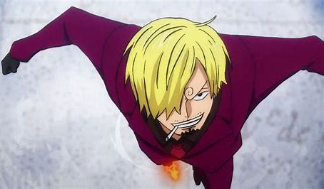

Alias: Kaki Hitam, Alis Melingkar. Jabatan: Koki, Okama. Tebusan/Bounty: ฿1.032.000.000

Sanji adalah seorang pemuda tinggi dan berotot dengan kaki panjang dan rambut pirang sepanjang rahang yang dia sikat di satu sisi wajahnya. Sebelum timeskip, ini adalah sisi kiri. Setelah dua tahun timeskip, dia mengganti gaya rambutnya sehingga menutupi sisi kanan. Tampaknya juga rambut Sanji lebih berantakan setelah timeskip tersebut.
Ciri fisik Sanji yang paling khas adalah spiral di alisnya: Alis kanannya membentuk spiral di ujung luar, sedangkan alis kirinya membentuk spiral di ujung dalam. Alisnya melengkung ke arah yang berlawanan dari saudara-saudaranya, yang alisnya melengkung berlawanan arah jarum jam (yaitu, ke sisi kiri); Alis Sanji malah melengkung searah jarum jam (yaitu, ke sisi kanan). Selama pertarungannya dengan Queen, ketika modifikasi genetiknya yang tidak aktif terbangun, alis Sanji beralih ke melengkung ke arah yang sama dengan saudara-saudaranya (yaitu, ke sisi kiri). [29][30] Setelah tidak sadarkan diri untuk waktu yang singkat, ketika dia bangun, alisnya telah kembali ke bentuk semula. [31] Saat melawan S-Shark, alisnya berubah arah lagi, meskipun mereka kembali setelah pertempuran. [32][33] Setelah membelokkan laser Kizaru dengan tendangan, alisnya sekali lagi berubah arah.
Sementara mata Sanji biasanya tampak hitam, dia digambarkan dengan mata abu-abu ke-biru di anime di awal Thriller Bark Arc. [35] Selama Punk Hazard Arc, ketika Trafalgar Law mengubah Sanji ke tubuh Nami, mata cokelatnya yang biasa menjadi abu-abu ke-biru.
Sanji hampir selalu mengenakan setelan hitam berdada ganda dengan kancing emas dan dasi bersama dengan kemeja kancing lengan panjang dengan berbagai warna, biasanya oranye, biru, pirus, atau hitam, terkadang dengan garis-garis. Pakaiannya berubah lebih sering daripada kebanyakan kru. Dia hampir selalu memakai sepatu hitam, sebagian besar untuk Gaya Kaki Hitamnya. Sepatu ini sangat tahan lama dan dirancang untuk meningkatkan kekuatan serangannya, meskipun dia dapat menyerang secara memadai tanpanya seperti yang ditunjukkan dalam pertarungannya melawan Kuroobi. Sanji adalah perokok berantai, dan jarang terlihat tanpa rokok
Sebagai seorang anak, Sanji mengenakan kemeja kuning dengan angka "3" di atasnya, celana putih, sepatu bot coklat, dan bandana kuning muda di lehernya. Rambutnya ditata berlawanan seperti saat ini.
Selama Baratie Arc, dia mengenakan kemeja biru dengan garis-garis hitam.
Selama Drum Island Arc, dia mengenakan mantel cokelat dengan garis berbulu.
Selama Arc Arabasta, dia mengenakan jubah gurun putih di bawah jaket biru langit dengan tudung biru tua dan simbol matahari merah di masing-masing bisep. Setelah berhasil melewati gurun, dia beralih ke setelan hitam biasa dan kemeja bergaris biru, meskipun tanpa dasi dan dengan tambahan kacamata hitam dengan lensa kuning.
Selama Arc Skypiea, dia mengenakan kemeja kancing lengan pendek berwarna merah muda dengan pola seperti bunga putih, magenta, dan merah anggur bersama dengan kacamata oranye yang tergantung di lehernya dan celana hitam selutut. Kemudian, dia berganti menjadi kemeja biru tua dengan garis-garis biru muda yang mengalir dari bahu.
Selama Long Ring Long Land Arc, dia mengenakan kemeja lavender dan dasi biru dengan pola silang.
Selama Arc Water 7, dia tidak mengenakan jaket jas, tetapi rompi hitam di atas kemeja oranye dengan garis-garis hitam.
Selama Enies Lobby Arc dia mengenakan kemeja cyan.
Selama Arc Lobi Pasca-Enies, dia mengenakan kemeja merah muda dengan dasi merah dan tanpa jaket.
Selama Thriller Bark Arc, dia mengenakan kemeja biru yang lebih diredam dengan dasi periwinkle.
Selama Arc Kepulauan Sabaody, ia mengenakan kemeja hijau dan dasi putih dengan garis-garis horizontal ungu
Selama perpisahan Topi Jerami, Sanji dipaksa untuk berpakaian sebagai Okama yang khas, mengenakan gaun merah muda dengan lengan pendek mengembang. Dia juga mengenakan wig keriting pirang panjang, cat kuku, sepasang pakaian dalam wanita, dan riasan tebal dan sampah. Dia juga terlihat dengan sepasang sepatu hak tinggi. Dia kemudian kembali ke pakaian dan penampilannya yang biasa beberapa waktu setelah itu.
Setelah dua tahun timekip, Sanji sekarang menutupi mata kanannya, menunjukkan mata kirinya, dan telah menumbuhkan rambutnya sedikit lebih panjang. Dia juga memiliki rambut wajah bergaya jangkar gelap dan janggut di bibir atasnya. Leher Sanji juga menjadi lebih tebal, mirip dengan Luffy dan Zoro. Dia telah tumbuh lebih tinggi dan karena itu tetap hampir sama dengan Zoro. Dia mengenakan setelan hitam double-breasted (yang kadang-kadang digambarkan sebagai biru tua) dengan kancing emas dengan kemeja kuning bersama-sama dan dasi coklat.
Di Punk Hazard, dia mengenakan kemeja abu-abu dengan dasi abu-abu yang sangat muda.
Saat di Punk Hazard, Kin'emon menggunakan kemampuan Fuku Fuku no Mi-nya untuk memberi Sanji mantel double-breasted untuk dingin, karena dia terjebak di tubuh Nami karena Trafalgar Law.
Selama Arc Dressrosa, Sanji pertama kali mengenakan kemeja putih yang dia kenakan terbuka, dengan dasi hitam, celana panjang hitam, dan rompi bergaris hitam. Setelah menyamar ke Acacia, dia mengenakan setelan hitam single-breasted dan kemeja putih dengan kancing atas terbuka. Di anime, dia juga memakai dasi biru. Dia juga mengenakan kacamata hitam, janggut putih palsu, dan kumis dan memasukkan mawar merah ke dalam saku dadanya. Setelah terluka oleh Doflamingo, Sanji mengenakan perban di dadanya dan mengenakan kemeja dan jas jas yang tidak dikancingkan dan di atas bahunya.
Setelah tiba di Zou, Sanji mengenakan kacamata hitam cokelat (dengan rambut masih menutupi salah satu kacamata), jaket kulit oranye, kemeja putih dengan pola polkadot ungu, celana kuning, sepatu cokelat, dan ransel kecil. Dia juga sedikit memangkas janggutnya. Kemudian, dia mengenakan mantel hitam berlapis bulu di atas kemeja putih polos dan kalung manik-manik.
Selama Arc Whole Cake Island, Sanji mengenakan kemeja putih berjumbai serta celana dan sepatu hitamnya yang biasa; Dia menjaga kerah kemeja tetap terbalik dan beberapa kancing pertama dibuka. Kemudian, pergelangan tangannya masing-masing dilengkapi dengan gelang emas yang meledak (kemudian terungkap palsu), dan wajahnya ditutupi secara diam-diam oleh topeng berteknologi tinggi transparan yang diberikan kepadanya oleh saudara perempuannya, untuk menghilangkan pembengkakan wajah yang dia terima selama konfrontasi kekerasan dengan saudara-saudaranya. Begitu dia berangkat ke Whole Cake Chateau bersama keluarganya, dia juga mengenakan jubah kerajaan merah dengan bahu tunggal yang disatukan dengan rantai dan gesper emas. Selama Pesta Teh, dia mengenakan mantel putih pucat dengan kerah berdiri dan lapisan emas di bagian luar, setelan putih, kemeja putih, ascot putih pudar, dan sepatu putih. Setelah menyelesaikan kue pernikahan kedua, Sanji menyamar sebagai salah satu koki WCI 31 dengan mengenakan topi koki dan kain.
Selama Levely Arc, Sanji mengenakan kemeja abu-abu tua dengan dasi oranye, celana hitam, dan perban yang melilit lengan kanannya.
Di Arc Negara Wano, Sanji diberi yukata bergaris kuning dan putih oleh Kin'emon dengan simpul atas yang sama dengan Luffy dan Zoro. Kemudian, dia mengenakan setelan raid yang diberikan kepadanya oleh keluarganya, yang memberi Sanji pakaian Germa hitam dan jubah hitam dan merah dengan nomor 3 di atasnya, sabuk putih dengan logo Germa 66 di bagian depan, sarung tangan putih panjang dengan manset oranye dan hitam, sepatu bot berpeluncur jet. Uniknya, itu juga memberinya masker untuk dipakai di hidung dan mulutnya, serta kacamata hitam dan satu set earphone di atas kepalanya. Itu juga menghaluskan bagian depan rambutnya menjadi dua bagian, satu mengarah ke atas dan satu mengarah ke bawah. [39] Selama Raid di Onigashima, Sanji mengenakan setelan merah anggur, kemeja hitam, dasi merah yang kemudian diubah menjadi putih, dan sarung tangan hitam sebelum sebentar berganti menjadi pakaian Bajak Laut Beasts dengan bantuan kekuatan Buah Iblis Kin'emon.
Selama Egghead Arc, Sanji mengenakan kemeja oranye Hawaii berkerudung dengan motif bunga biru dan kuning, celana pendek hitam dengan nama Vegapunk tertulis di samping, lubang suara, dan sepasang Sepatu DOM oranye.
Selama Arc Elbaph, Sanji saat ini menerima pakaian bergaya Viking karena Road memenjarakannya di Land of Gods-nya. Dia sekarang mengenakan setelan lengkap baju besi kulit seperti ksatria dekoratif dengan kilt biru seperti chainmail. Bersamaan dengan ini, dia mengenakan sepasang kemeja dan celana coklat panjang, dengan sepasang sarung tangan biru, dan ikat pinggang kulit dengan gesper dekoratif bulat besar, dengan pelindung lutut biru muda dan sepatu bot kulit biru, lengkap dengan pedang dan jubah berlapis bulu biru besar.
Dalam Clockwork Island Adventure, dia awalnya muncul dengan pakaian renang dua warna biru. Setelah Bajak Laut Trump mencuri Going Merry dengan pakaiannya di dalamnya, dia harus mengenakan tuksedo putih dengan mawar merah di penutup dari toko pernikahan. Kemudian dia mengganti pakaiannya dengan jaket hijau, dengan kemeja abu-abu di bawahnya, dan celana hitam.
Di Kerajaan Chopper di Pulau Hewan Aneh, dia mengenakan jaket coklat tua, dengan area dada terbuka, kerah putih, dan celana hitam. Dia juga memakai kacamata oranyenya selama plot. Juga sesaat, dia mengenakan kostum panda mewah yang dirancang oleh Usopp.
Selama Arc G-8, dia menyusup sebagai juru masak Marinir, mengenakan seragam juru masak putih, syal biru di lehernya, dan topi koki putih.
Dalam One Piece Film: Strong World, sebelum bertemu Shiki, dia mengenakan sweter leher kru putih, dasi bergaris diagonal putih dan ungu, celana potong hijau limau, dan sepatu pantofel hitam. Setelah dipisahkan dari Topi Jerami lainnya, dia mengenakan topi koboi hitam dengan tali hijau, ransel karang bundar, blazer merah, kemeja lipit merah muda, celana pendek coklat, ikat pinggang coklat yang sedikit lebih gelap, dan sepatu bot hitam dengan aksen abu-abu. Selama penggerebekan di istana Shiki, dia mengenakan setelan hitam berdada tunggal terbuka, kemeja biru dengan pola polkadot biru muda, kalung dengan tengkorak di atasnya, dan sepatu hitam.